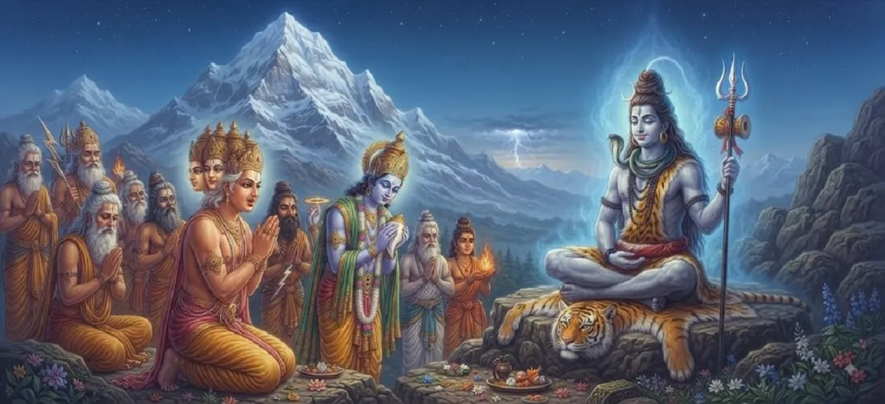

देवताओं ने भगवान शिव की खोज की
कुमार खण्ड का चौथा अध्याय दिव्य देवताओं की हताश तीर्थयात्रा का वर्णन करता है। तारकासुर के क्रूर उत्पीड़न से अभिभूत और उसके वरदान की शर्तों से बंधे हुए, इंद्र और अन्य देवताओं को एहसास हुआ कि उनकी एकमात्र आशा सर्वोच्च तपस्वी पर है।
अपने बर्बाद स्वर्ग को पीछे छोड़ते हुए, वे गहरे ध्यान में भगवान शिव के पास जाने के लिए पवित्र हिमालय की यात्रा करते हैं।
अध्याय 4 की मुख्य बातें
हिमालय यात्रा
देवता शिव के निवास की ओर प्रस्थान करते हैं।
गहन ध्यान
भगवान शिव को योग में लीन पाया।
सामूहिक अपील
इन्द्र और देवता विनम्र प्रार्थना करते हैं।
वरदान का एहसास
यह समझना कि शिव के हस्तक्षेप की आवश्यकता क्यों है।
दिव्य आभा
कैलाश की अब्रह्मांडीय शांति का अनुभव।
मोक्ष की आशा
अपनी व्यथा महादेव के चरणों में रखते हुए।
इस अध्याय में मुख्य विषय
दिव्य परिषद एवं शिव के पास जाने का निर्णय
यह महसूस करते हुए कि ब्रह्मा के वरदान के कारण सामान्य युद्ध और दिव्य हथियार तारकासुर के खिलाफ पूर्णतः अप्रभावी हैं, इंद्र ने अपने अगले कदम पर विचार-विमर्श करने के लिए सभी देवताओं की एक आपातकालीन बैठक बुलाई।
उन्होंने सर्वसम्मति से निर्णय लिया कि केवल भगवान शिव ही समाधान प्रदान कर सकते हैं।
पवित्र हिमालय की तीर्थयात्रा
देवता अपने विस्थापित क्षेत्रों को छोड़ देते हैं और हिमालय की शांत, राजसी चोटियों की पवित्र यात्रा पर निकल पड़ते हैं, जहां भगवान शिव गहन एकांत में निवास करते हैं।
जैसे ही वे परम तपस्वी की आभा के करीब पहुंचते हैं, वातावरण बदल जाता है।
अनन्त ध्यान में भगवान शिव का साक्षी होना
पहुंचने पर, देवताओं ने भगवान शिव को गहरे योग में बैठे हुए देखा, जो शुद्ध चेतना की एक अब्रह्मांडीय, चकाचौंध करने वाली रोशनी बिखेर रहे थे। उनकी पूर्ण शांति उपस्थित सभी लोगों को श्रद्धा और विस्मय का अनुभव कराती है।
वे रुकते हैं, उसकी गहन समाधि को भंग करने में झिझकते हैं।
इन्द्र की स्तुति और विनम्र प्रार्थना
हाथ जोड़कर आगे बढ़ते हुए, इंद्र महादेव की स्तुति के भजन गाते हैं, उन्हें ब्रह्मांड के सर्वोच्च निर्माता, संरक्षक और संहारक के साथ-साथ संकटग्रस्त लोगों के परम आश्रय के रूप में स्वीकार करते हैं।
उनकी आवाज़ में स्वर्ग का सामूहिक दुःख और आशा है।
महादेव के समक्ष ब्रह्मांडीय संकट का अनावरण
देवताओं ने तारकासुर के असहनीय उत्पीड़न, पवित्र यज्ञों में व्यवधान और राक्षस के शासनकाल में दिव्य व्यवस्था की असहायता की व्याख्या की।
वे धीरे-धीरे भगवान को उनके दिव्य वंश के बारे में भविष्यवाणी की याद दिलाते हैं।
सर्वोच्च भगवान की प्रतिक्रिया की प्रतीक्षा में
सांस रोककर, देवता भगवान शिव की आंखें खुलने और उनकी दुर्दशा को स्वीकार करने की प्रतीक्षा कर रहे हैं, यह जानते हुए कि उनकी दिव्य कृपा ही ब्रह्मांड के लिए एकमात्र ढाल है।
दैवीय हस्तक्षेप को आकार देने के लिए मंच तैयार है।
अध्याय 5 की ओर दिव्य पुत्र की आवश्यकता
भगवान शिव के समक्ष अपनी अपील रखने के बाद, कथा अजेय राक्षस राजा को हराने के लिए एक दिव्य पुत्र के जन्म की गहरी ब्रह्मांडीय आवश्यकता का पता लगाने के लिए आगे बढ़ती है।
अगला अध्याय इस दिव्य आवश्यकता के पीछे के गहन उद्देश्य का खुलासा करता है।
अध्याय 4 की प्रमुख शिक्षाएँ
समर्पण की शक्ति
संकट के दौरान उच्च मार्गदर्शन की तलाश।
पवित्र धाम
कैलाश आध्यात्मिक शरण का सर्वोच्च स्थान है।
शिव की स्थिरता
ब्रह्मांडीय शक्ति के स्रोत के रूप में ध्यान।
सामूहिक प्रार्थना
एकीकृत अपीलें ईश्वरीय ध्यान आकर्षित करती हैं।
ईश्वरीय कृपा
केवल परम कृपा ही ब्रह्मांडीय असंतुलन को दूर कर सकती है।
निर्णायक मोड़
निराशा दिव्य समाधान की ओर बढ़ रही है।
आध्यात्मिक चिंतन
जब जीवन की चुनौतियाँ और आंतरिक अहंकार-अत्याचार हम पर हावी हो जाते हैं, तो देवताओं की भगवान शिव की यात्रा हमें शांति और ध्यान की ओर आंतरिक रूप से मुड़ना सिखाती है। सच्ची मुक्ति अपने संघर्षों को महादेव की सर्वोच्च चेतना को समर्पित करने से मिलती है।
अध्याय 4 का संदेश जीना
दुर्गम कठिनाइयों का सामना करने पर ध्यान और प्रार्थना के माध्यम से आध्यात्मिक शरण लें।
अहंकार के बजाय विनम्रता और ईमानदारी के साथ उच्च ज्ञान की ओर बढ़ें।
अपने जीवन में सद्भाव बहाल करने के लिए ईश्वरीय कृपा के सर्वोच्च समय पर भरोसा करें।
प्रमुख आध्यात्मिक अवधारणाएँ
देवताओं द्वारा शिव के चरणों में पूर्ण समर्पण और शरण मांगी गई।
भगवान शिव की गहन, अबाधित ध्यानलीनता।
सर्वोच्च भगवान की स्तुति करने के लिए वैदिक स्तुति और भक्ति भजन पेश किए गए।
दिव्य हिमालय निवास तक पहुँचने के लिए की गई पवित्र तीर्थयात्रा।
तारकासुर के शासन द्वारा प्रदत्त अपार दुःख और पीड़ाएँ।
पारब्रह्मांडीय दिव्य कृपा ब्रह्मांडीय भाग्य को बदलने में सक्षम है।
अध्याय सारांश
कुमार खण्ड अध्याय 4 में इंद्र और पीड़ित देवताओं की हिमालय की यात्रा का विवरण दिया गया है, जहां वे भगवान शिव को गहरे ध्यान में पाते हैं और तारकासुर के खिलाफ हस्तक्षेप करने के लिए विनम्र प्रार्थना करते हैं।
अक्सर पूछे जाने वाले प्रश्न
1. कुमार खण्ड अध्याय 4 का मुख्य विषय क्या है?
अध्याय 4 पीड़ित देवताओं की यात्रा और सामूहिक गुहार पर केंद्रित है क्योंकि वे तारकासुर के खिलाफ मदद मांगने के लिए भगवान शिव के पास जाते हैं।
2. देवताओं को सीधे भगवान शिव के पास क्यों जाना पड़ा?
चूँकि तारकासुर के वरदान में निर्दिष्ट था कि उसे केवल भगवान शिव के पुत्र द्वारा ही मारा जा सकता था, देवताओं को एहसास हुआ कि केवल शिव ही अंतिम समाधान प्रदान कर सकते हैं।
3. देवताओं ने भगवान शिव को किस अवस्था में पाया?
उन्होंने भगवान शिव को अपने हिमालय निवास में गहरे, शांत ध्यान और ब्रह्मांडीय तल्लीनता में डूबा हुआ पाया।
4. अध्याय 4 के बाद अगला अध्याय कौन सा है?
अगले अध्याय का शीर्षक 'दिव्य पुत्र की आवश्यकता' है।
"जब सभी सांसारिक रक्षाएँ विफल हो जाती हैं और पृथ्वी पर अंधकार छा जाता है, तो व्यथित व्यक्ति सहज रूप से महादेव की सर्वोच्च शांति की ओर मुड़ जाता है, जहाँ शाश्वत कृपा प्रतीक्षा करती है।"
कुमार खण्डा के माध्यम से जारी रखें
अध्याय 4 में देवताओं द्वारा भगवान शिव की खोज का विवरण दिया गया है। अगले अध्याय, दिव्य पुत्र की आवश्यकता को जारी रखें।